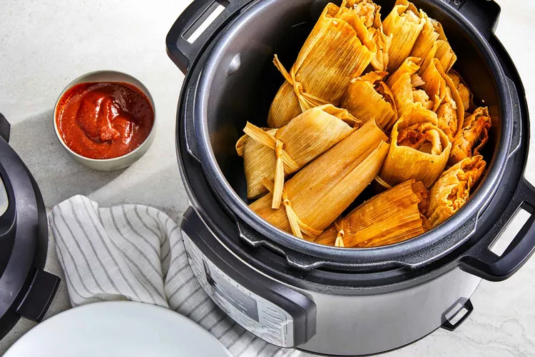

Instant Pot Tamales

Description
Tamales are a traditional Mexican dish made with a corn based dough mixture that is filled with various meats or
beans and cheese.
Tamales are wrapped and cooked in corn husks or banana leaves, but they are removed from the husks before
eating.
Try them served with pico de gallo on top and a side of guacamole and rice.
Ingredients
- 1 (8 ounce) package dried corn husks
Pork Filling
- 2 cups water, or more as needed
- 2 cups coarsely chopped onion
- 3 cloves garlic, smashed
- 1 tablespoon chili powder
- 2 teaspoons kosher salt
- 1 teaspoon chipotle chile powder
- 1 teaspoon ground cumin
- 1 (3 pound) boneless pork shoulder
Salsa Roja (Red Sauce)
- 3 cups chicken stock, divided
- 2 medium Roma tomatoes, quartered
- 8 Armenian chile peppers, seeded and sliced
- 2 de arbol chile peppers
- 4 cloves garlic
- 1 ½ teaspoons ground cumin
- 1 ½ teaspoons kosher salt
- ½ teaspoon onion powder
Masa Mixture
- 4 cups instant corn masa
- 2 ½ teaspoons kosher salt, divided
- 1 teaspoon baking powder
- 1 cup lard, melted
- 2 cups warm water, or more as needed
Directions
- Place 20 dried husks in a large Dutch oven and cover with water. Place a plate or bowl filled with water on
top of husks to keep submerged.
Let soak for at least 2 hours, flipping occasionally until husks are softened.
- Meanwhile, prepare the filling: Combine 2 cups water, onion, garlic, chili powder, salt, chipotle powder,
and cumin in a multi-functional pressure cooker (such as Instant Pot). Cut pork shoulder into 4 equal pieces
and add to the pot. Close and lock the lid. Select high pressure according to manufacturer's instructions;
set timer for 60 minutes. Allow 10 to 15 minutes for pressure to build
- While the filling is cooking, prepare the sauce: Place 2 cups chicken stock, tomatoes, chiles, and garlic in
a saucepan over medium-high heat; bring to a boil. Reduce heat to medium-low and simmer, stirring
occasionally, until tomatoes are fully softened, about 30 minutes.
- Transfer sauce mixture into a blender; Cover and hold the lid down with a potholder; pulse a few times
before leaving on to blend until completely smooth, 2 to 3 minutes.
- Transfer blended mixture back into the saucepan; stir in remaining 1 cup chicken stock, cumin, 1 teaspoon
salt, and onion powder. Bring to a simmer over medium-high heat, then reduce heat to low and cook, stirring
occasionally, until sauce has thickened and color is a deeper red, about 30 minutes.
- When the filling has finished cooking, release pressure using the natural-release method according to
manufacturer's instructions for 10 minutes, then use the quick-release method to release remaining pressure,
1 to 2 minutes. Unlock and remove the lid.
- Remove pork to a shallow baking dish; discard any fat and shred using 2 forks. Place shredded meat in a
bowl. Stir 1 cup of the prepared red sauce and remaining 1/2 teaspoon salt into shredded pork to coat; set
filling aside. Set remaining sauce aside for serving.
- Strain cooking liquid through a fine mesh strainer and discard solids. Skim as much grease as possible from
the liquid. Reserve 1 cup strained cooking liquid for cooking the masa and discard any remaining.
- To make the dough: Combine masa, 2 teaspoons salt, and baking powder in a stand mixer fitted with the paddle
attachment; mix on low speed until completely combined, 1 to 2 minutes. Increase speed to medium and
gradually add melted, warm lard alternately with 1 cup reserved, warm cooking liquid and 2 cups warm water;
beat until dough is completely combined. Increase speed to medium-high and beat until dough is light and
fluffy, 4 to 5 minutes. The dough should resemble a loose cookie dough; adjust by adding 1 tablespoon of
warm water at a time, if needed.
- Drain water from corn husks. One at a time, flatten out each husk, with the narrow end facing you, and
spread approximately 1/4 cup masa mixture onto the top 2/3 of the husk. Spread about 1 tablespoon of meat
mixture down the middle of the masa. Roll up the corn husk starting at one of the long sides. Fold the
narrow end of the husk onto the rolled tamale and tie with a piece of butcher's twine.
- Stand tamales vertically, open-side up, in the steamer basket of the Instant Pot. Place the trivet in the
cooker and add 2 cups of water. Place the steamer basket on the trivet, and close and lock the lid. Select
high pressure and set timer for 20 minutes. Allow 10 to 15 minutes for pressure to build.
- Release pressure using the natural-release method according to manufacturer's instructions for 10 minutes,
then use the quick-release method to release remaining pressure, 1 to 2 minutes. Unlock and remove the lid.
Allow tamales to rest in the cooker for 10 minutes before serving. Meanwhile, warm the remaining sauce to
serve with tamales.